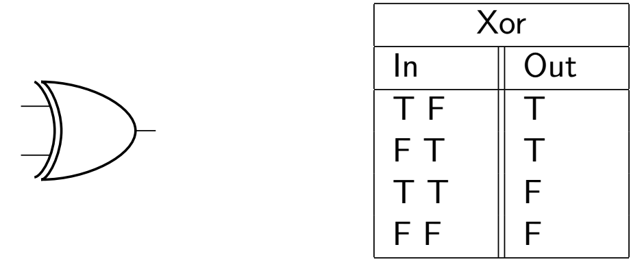

The 'Exclusive' OR, or XOR, is a gate that essentially adds one extra limitation to the OR gate.
The caveat is this. For an XOR gate to produce an output of 'on', one of the two inputs has to be on, but not both. Alternatively, one can say that both the inputs must hold opposite states.
For more clarity, take a look at the truth table below.
We can see that the XOR gate returns a value of 'True' when the inputs are opposites, but it returns a value of 'False' when the inputs are identical.
The Minecraft schematic for this particular gate is a little more complex, but you can see that it's been cleverly shrunken down to make full use of redstone mechanics. You'll find it below.
I highly recommend building this and messing around with it, just to get a feel for building circuits in redstone whose function aren't immediately apparent.
There is an inverted counterpart, or logical complement to this gate known as the XNOR, but it isn't as useful to us as NOR or NAND can be. As such we won't be covering it in this course. The next section talks a little more about logical complements.